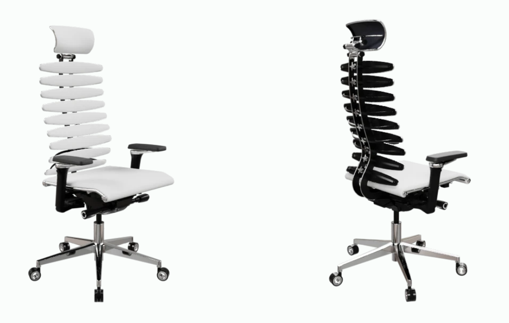

METTA • Тест посадки
Как сейчас сидит твоё тело?
Короткий тест проверит посадку и подскажет, где спина и шея получают лишнюю нагрузку.
METTA
ERGONOMIC CHAIRS
Мы не ставим диагнозы. Это мягкая «перепроверка» посадки:
- где перенапрягается поясница;
- как чувствуют себя шея и голова;
- что происходит с ногами и общим самочувствием.
Вопрос 1 из 7
Блок: Таз и поясница
Таз и поясница
Шаг 1
Результат теста посадки
Общая нагрузка: средний уровень
Кресла METTA под твои задачи
По ответам теста мы подобрали модели для разных зон: поясницы, шеи и ног.
Переключай вкладки и листай варианты.

Equalizer
Поясница • Индивидуальная поддержка позвоночника
Максимально точная настройка под спину:
- 9 независимых модулей под каждый отдел позвоночника
- поддержка сохраняется в разных позах, меньше “держать спину мышцами”
- особенно актуально при хронической усталости поясницы

Ergolife V1
Поясница • База для ежедневной работы
Надёжный вариант, когда нужен комфорт без лишних опций:
- дышащая сетчатая спинка
- 2D-поддержка поясницы
- мягкое объёмное сиденье
- регулировка высоты и жёсткости качания с фиксацией
- стальной каркас и корпус

Ergolife V3
Поясница • Динамическая посадка
Переход к “живому” креслу, которое помогает разгружать поясницу:
- синхромеханизм — меньше статической нагрузки
- натяжное сиденье с двухзонной регулировкой жёсткости
- настраиваемый подголовник и 2D-поясничная поддержка
- ручная настройка жёсткости качания

Samurai V2
Поясница • Точная настройка под себя
Универсальный вариант для длительной работы и активной посадки:
- регулируемая 3D-поясничная поддержка
- слайдер глубины сиденья (6 положений)
- синхромеханизм — снижает усталость
- смещённый центр качания — ноги остаются на полу

Yoga V1 (Black Edition)
Поясница • Гибкий позвоночник
Базовая модель линейки Yoga — когда хочется “живую” поддержку спины:
- динамическая спинка с гибким позвоночником
- поддержка спины в любом положении
- глубокое отклонение (до 80°)
- много индивидуальных регулировок под себя

Yoga V3 (Triumph)
Поясница • Флагман Yoga
Флагман линейки Yoga — максимум комфорта и поддержки для длительных нагрузок:
- гибкий позвоночник ручной сборки
- дышащая сетка + боковая поддержка
- каркас и пятилучье из литого алюминия
- максимальная комплектация и современные регулировки

Ergolife V2
Шея и голова • Подголовник
Комфортный шаг вперёд для разгрузки шеи:
- мягкий подголовник — снижает нагрузку на шею
- регулируемая поясничная поддержка
- объёмное тканевое сиденье
- стальной каркас и надёжный газлифт

Samurai V1 (Black Edition)
Шея и голова • Много регулировок
Когда важно “донастроить” посадку под себя:
- 3D-подголовник и 4D-подлокотники
- анатомическая спинка повторяет форму позвоночника
- сетка — комфортно в долгой работе
- стальной каркас

Yoga V2
Шея и голова • Поддержка в любом положении
Для тех, кто часто откидывается и хочет стабильную поддержку:
- гибкий позвоночник — поддержка спины в любом положении
- комфорт при длительной работе и отдыхе
- когда шея устает — важно, чтобы верх спины “держался” креслом

Ergolife V4
Ноги и стопы • Глубина сиденья
Сильно помогает, если ноги “висят” или затекают:
- регулировка глубины сиденья
- раздельное синхронное отклонение спинки и сиденья
- фиксация наклона спинки в 4 положениях
- мягкое прошитое сиденье, стальной корпус

Yoga Move
Ноги и стопы • Устойчивая опора при отклонении
Если любишь менять положение и “раскачиваться”, но важно, чтобы ноги не теряли опору:
- механизм Move — увеличенный диапазон отклонения
- мультиблок с фиксацией положений
- динамическая посадка без жёсткой фиксации
- устойчивое положение ног при отклонении

Samurai V3
Ноги и стопы • Комфорт дома и надолго
Мягкая посадка + широкая настройка помогает меньше “крутить позы”:
- регулируемая 3D-поясничная поддержка
- мягкая посадка, комфорт при длительной работе
- 5D-подлокотники с поворотом на 360°
Менеджер поможет подобрать точную комплектацию под твой рост, задачи и особенности посадки.